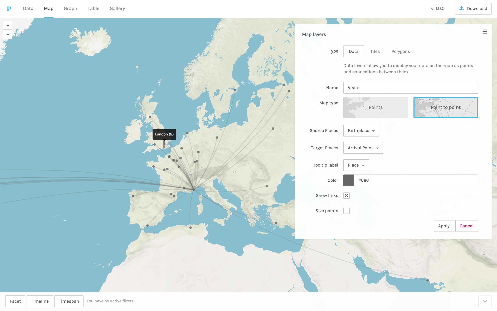

9 minutes
Mapping DAI magazines’ Readership
While digging through magazines created by user clubs of DAI computers, we stumbled upon lists of their readers. While this information looked very interesting at first glance, we had to find a satisfying way to analyze this trove of data. While this effort is ongoing, we will discuss here the challenges involved in analyzing this data and propose to use maps to visualize the geographic diversity and scale of the DAI’s network. We thus hope to draw what was the DAI computer by mapping it as a constellation of who made it what it was. In other words, those who produced it, those who sold it, those who worked with it, or, simply said, those who loved the DAI.
Context
As of now, we found lists of readership included in DAIclic (written in French and distributed in France and Belgium) and in DAInamic (multilingual and distributed across Europe) where, as the popularity of the DAI started to wane at the end of the 1980’, magazines dedicated to the DAI started to close down or change direction. Some editors then chose to publish the list of their readers to allow them to keep in contact with each other even after the end of the magazine.
Cover of the shared publication of DAIclic 10 and DAInamic 37
It would thus seem that, as the DAI computer declined and its users’ magazine had to shut down, club members wanted to keep in touch across Europe. While some might have kept in contact by migrating together to other magazines or through other channels, they also wanted to communicate and keep contact by mail.
Data
We suspect those lists collected to be somewhat exhaustive. They contain the name, the full address, and sometimes the club affiliation of each reader of DAInamic and DAInamic at the end of 1986, and DAIclic again in 1988. This immediately poses the question of the anonymity of the readers. To tackle this issue, we have dropped the name of each reader from the end product and to remove too precise information from the address of readers, we elected to only keep the street name and not the house number.
Qualitative first
Keeping with the mantra that “the whole is always smaller than its parts”(Latour et al., 2012), we tried to keep as much of the qualitative information contained in those tables while at the same time completing it with contextual information. We felt that simply adding up those rows and reducing them as a homogeneous entry would lose the specificity of each of those readers.
This tool aims to be a first step toward the development of a tool to visualize the DAI as a network of actors that made it what it was. That approach seems particularly relevant when we remember that the DAI was often criticized at launch for its lack of software and hardware expansion. The real DAI, the one with which its users interacted, the one that was used to experiment, learn, play, and much more by thousands of DAI-ist across Europe, can thus be seen an hybrid, built as much by its users than by it’s manufacturer.
Heavily modified DAI computer sourced from bruno.vivien.pagesperso-orange.fr
Thus, to highlight this network of actors that made the platform what it was, we’ve elected to use a map. We felt that, using a map, we could highlight the geographic diversity and the size of the created network while also keeping each point a unique entity. A map also allow different types of actors to share the same canvas to underline how they each contributed in their way to the life of the machine.
It is also to note that we piece out this dataset from the magazines the user read, DAI-ist were very much aware of their diversity and scale. They were proud of the diversity of the network they took part in, its internationalism, the diversity of uses of their beloved computer, and much more. With this visualization, we aim to understand the DAI by better understanding what it was to be part of its network of users, clubs, and stores.
Discovering alternatives
While working on this project we found that other solutions existed to highlight relational databases such as ours. One of those is Palladio, a Free and Open Source web application developed at Stanford’s Humanities + Design research lab, that also offer to analyze relational database through maps and graphs.

Screenshot from Palladio’s website (https://hdlab.stanford.edu/palladio/)
In the long run, building a tailored visualization allows us to experiment with what information we can add to tell a story or add context. But this approach for relational data through a map is far from new, as we saw, and this existing tools will be great source of inspiration and comparison.
Writing a tailored tool
To do that, we first experimented with the data through a Jupyter Notebook written in Python. But while notebooks are great for trying all kinds of approaches with quick results, we found that it was difficult to allow less technically inclined researchers to experiment. Even with online collaborative notebooks that have become more and more common and allow to ease the issue of the coding environment, they stay quite intimidating and create issues with document management. Furthermore, those online platforms introduce issues regarding the self-contained nature of a Jupyter Notebook if the data need to be anonymized beforehand. We thus chose to look further and tried Streamlit to get a tool, easy to update, and self-hostable.
The map
Our work on this map is still very much in progress while we find new information to add and new ways to use this tool to retell the stories of this machine and all the actor that made it lives.
The first iteration of the readership of DAIclic and DAInamic applied on a map through geocoding.
After further iterations, we get this still very early toolbox (notice the collapsing menu on the left) to take our database, add some information for the design, and get our results. Our aim is to develop this tool in parallel to our research and new sources so as to better adapt to each new meaningful actor we might encounter or new research questions.
The map is built on top of Folium which is a tool to allow building interactive leaflet.js map with Python code. For now, the UI is made with Streamlit, which allows us to turn Python scripts into an interactive website and quickly add new scripts as pages to visualize our ever-expending data set in new ways.
Geocoding
But to fill this map, the key translation that had to be done was to transform these human-readable addresses into a set of GPS coordinates. This translation, known as geocoding, is a part of our everyday life online, be it to get a set of directions to our destination or simply in numerous visualizations of markers on maps online. While achieving this, geocoding APIs have become a staple of the online world. They have become so much so that having a precise marker on a map when we look for an address has become evidence but this translation is not as self-evident as it might seem. We thus take advantage of decades of development for marketing purposes to highlight qualitative data for this research.
There is a wealth of possible geocoding APIs but interestingly enough they tend to each display some quirk and biases. Choosing the most appropriate one felt in some way like introducing a new member to this research. Most of these APIs are the definition of a black box. You send a request, and they send back an answer but the “why” or “how” is not covered.
As a social scientist, I believe it is important to try to understand what a geocoding API or any of our tools imply and to see and openly admit their weakness. It is also crucial to ensure the proper management of private data that we might find or collect along the way. To understand what they represent let’s take a look at Nominatim, an Open Source geocoding API. Nominatim queries the OpenStreetMap database to compose its answer, but Google’s geocoding API uses GoogleMap as a data source.
This means that, in a way, each API has its own worldview. This becomes particularly evident when the API is uncertain of where to place the point you asked for. Our decades-old addresses are filled with the implicit knowledge that a local postman would know your local environment. For example, a letter could arrive at its destination with the name of your home instead of its house number. Some geocoding APIs only know of a single country or continent and then will find any addresses to be within their border instead of admitting their ignorance. Those could not be used alone for this project as the addresses span across Europe.
The geocoding APIs we tried were in general quite bad at dealing with ignorance and uncertainty. As mentioned, a localized API will sooner find France in America than admit, it’s throwing wild guesses around. But they also tend to place the point they have no clue how to interpret in a specific spot on the map. That is the case with the API we chose, OpenCage. Somehow a small town in South-East Asia was the hotspot of all DAI-related things if we ask certain APIs. To mitigate this issue we ignore for now all addresses outside our expected range.
Conclusion
While we hope to keep adding other past users and contextual information on the map as we discover them in our archive and interview. We feel that mapping these users that at a point in time spend so much effort building, maintaining, and all in all making the DAI live highlights the scale and the intensity of this community that stretched through Europe and that developed software and hardware for their beloved micro-computer.
It inspires us to think of each entry in a long list as an actor in the wider story of the DAI computer that we wish to unearth. We can start to wonder if they traveled to the meeting place of their club every week or if these sometimes far away clubs were used remotely or in case of emergency. We might even begin to ask ourselves where did they buy their DAI or their component, was it at a local shop, or were they ordering from afar for better prices? Did their local seller there provide advice on maintaining or upgrading their machines? While a simple map won’t bring us answers to any of these questions it might inspire more to share their stories with this machine and to spend time to better understand how it connected its users.
Bibliography
Latour, B., Jensen, P., Venturini, T., Grauwin, S., & Boullier, D. (2012). ‘The whole is always smaller than its parts’ - a digital test of Gabriel Tardes’ monads : ‘The whole is always smaller than its parts’. The British Journal of Sociology, 63(4), 590‑615. https://doi.org/10.1111/j.1468-4446.2012.01428.x